docs/design/history/，其中已被本版替换的页面以本版为准；
未被提及的 v1 数据层规格（history/ui-status-enhancement/SPEC.md）继续生效。| 意见 | 落实方式 | 页 |
|---|---|---|
| P4 设备页 | 相机卡、位置传输卡在上（同一种卡片样式），照片传输在最下（拇指区）；入口文案去掉“Wi‑Fi”，只留 Wi‑Fi 图标 | 10 |
| P5 连接叠层 | 取消=操作槽内的玻璃胶囊按钮；去掉分隔线；步骤点改为图标外圈分段环；固定三槽位，五帧零跳变 | 12 |
| P6 失败态 | 红色图标无底色并放大到 76dp；无“帮助/重试”；轻触任意处/返回/5 s 自动消退；“正在断开”换 Wi‑Fi 断开图标+回收环 | 13 |
| P7 断开蓝牙 | 相机卡右上、电量格正上方的淡化小图标 → 二次确认对话框写明后果；Ⓘ 只保留“移除相机” | 10 · 11 |
| P9 选择态 | 悬浮下载胶囊（带张数与合计大小）；底部留白 + 滚动收起，不挡缩略图 | 18 |
| P10 视图选项 | 玻璃浮层；“保护与评分”合并为一个标签/一个开关；格式、大小拆成两个 tag/两个开关 | 16 |
| P10 规则 | 信息 tag 与操作按钮的统一视觉规则 + 对照 | 7 |
| P12 预览 | 顶部状态行（定位 · 锁星）+ 底部一条信息条（格式 · 分辨率 · 大小）+ 胶片条 + 下载，横竖图同一布局；上滑展开详情 | 20–22 |
| Q1–Q5 语义 | 后台常驻语义：离开应用不断蓝牙；仅 Wi‑Fi 结束；蓝牙未连时点传输自动先连 | 30 |
| Q6 取消分页 | 整日连续列表 + 可见窗口惰性加载 + LRU | 19 |
| Q11 帮助/赞助 | 帮助唯一入口=设备清单；移除自动赞助弹窗；“支持上游作者”手动链接只在关于页一处 | 8 · 24 · 32 |
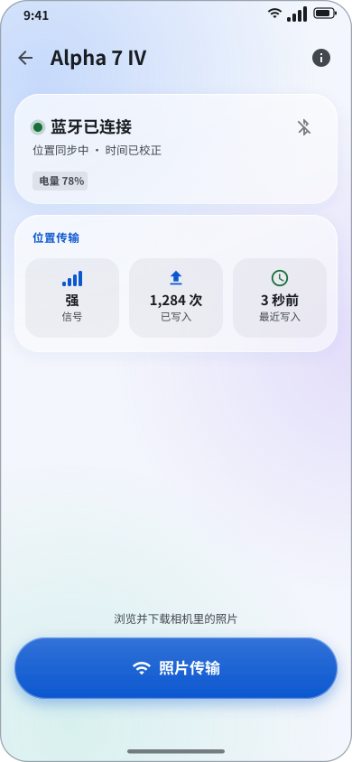
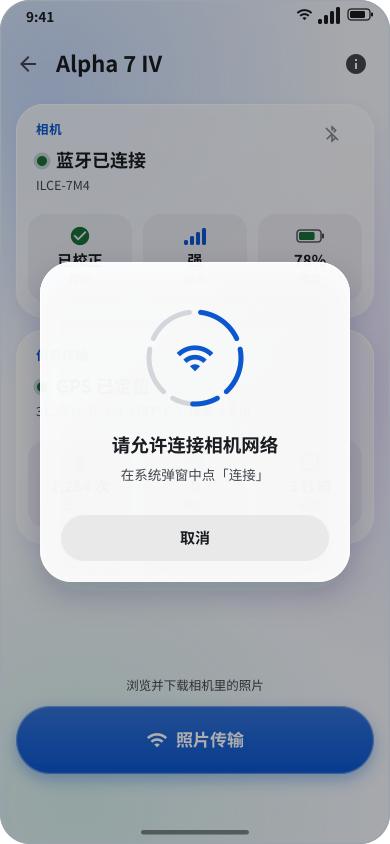
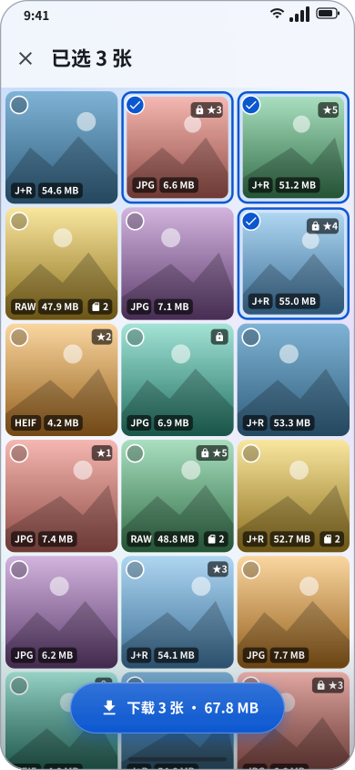
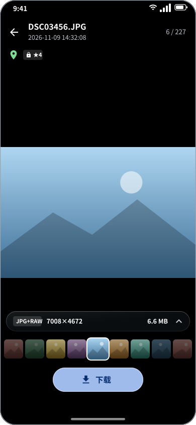
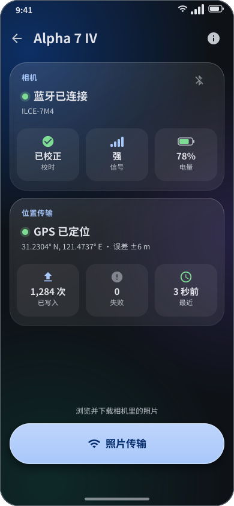
| 意见 | 落实方式 | 页 |
|---|---|---|
| 1 对话框按钮 | 右下角文字按钮是 M3 默认而非刻意设计。改为底部左右并排的玻璃胶囊：取消在左（淡色）、确认在右（主色实底；危险操作红色），各占一半宽；全应用统一并写入规则 | 7 · 9 · 11 · 12 |
| 2 设备页 | 三个状态格统一为“图标 / 数值 / 固定项目名（校时·信号·电量）”；电量缓存龄仅在 >30 分钟时以淡色小字出现；位置传输卡精简为一行 | 10 |
| 3 断开确认 / Ⓘ / 双卡 | 确认框只留标题 + 一句后果；Ⓘ 删除 MTU；双卡合并浏览，仅两卡都有内容时出现“卡 2”小标，容量按卡分行 | 11 · 14 · 17 |
| 4 单张预览 | 横竖图同一布局：一条半透明信息条（已定位图标 + 锁/星 + 格式·分辨率 + 大小）+ 缩小的半透明胶片条 + 下载，可与照片交叠；参数只显示数值；拍摄参数 / 镜头 / 直方图是设置里的三个开关（默认关，只影响信息条）；上滑详情保留；补充横屏 / 折叠屏 / 近方形屏断点 | 20 · 21 · 22 · 23 |
| 5 日志 | 顶栏新增“复制”图标：复制当前筛选下的全部日志，底部提示条反馈 | 23 |
| 6 关于 | 帮助页新增“关于”：上游来源、GPL‑3.0、修改声明、源码地址（GitHub）、开源组件许可、Sony 商标声明、隐私说明入口；赞助链接标注为“上游作者” | 24 · 25 |
| 7 平台与模糊 | 只做 Android；模糊实现确认用 Haze（Apache‑2.0），给出用法层级与降级；网格滚动区仍不做实时模糊 | 4 · 5 |
| 8 Q17–Q25 | 全部按推荐默认确认；Q20 → Haze，Q21 → 进入或横向切换后自动读取（250 ms 防抖 + 缓存），网格里不读 | 34 |
| 9 双源发布 | 主仓库（私有部署）为主、成功后再发 GitHub；新增开发拆分 M10（只写设计要点，不改脚本） | 34 |
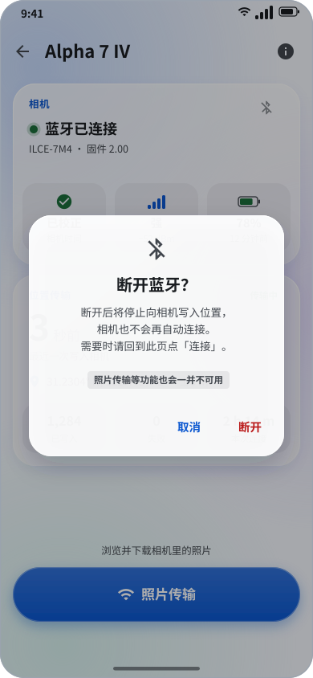
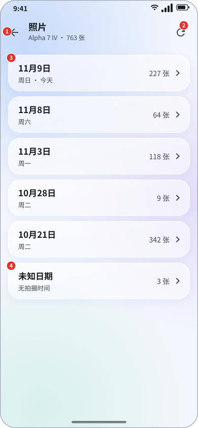
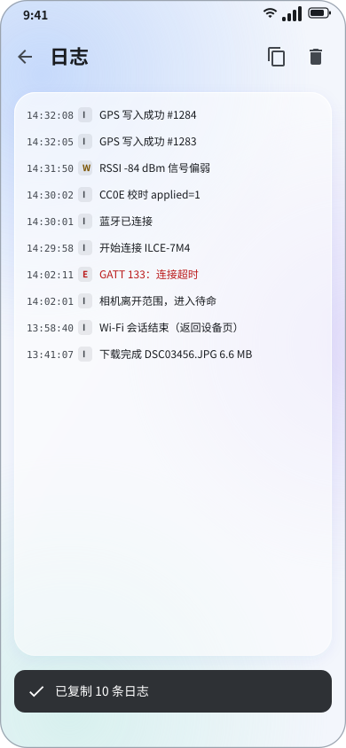
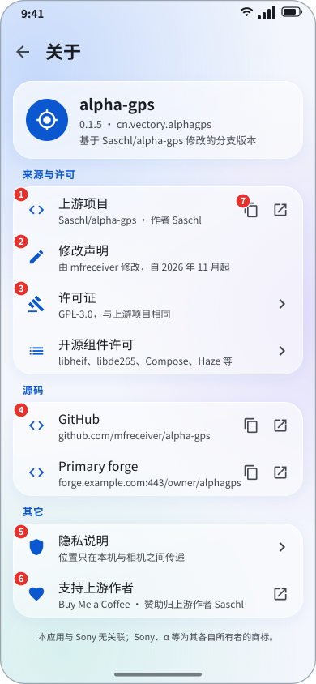
| 意见 | 落实方式 | 页 |
|---|---|---|
| 1 minSdk 31 | 删除全部“API 26–30 降级”设计；玻璃恒为真实模糊（Haze）；固定蓝色主题，不启用动态色；开发拆分加入 26→31 清理清单 | 4 · 5 · 33 · 34 |
| 2 位置传输卡 | 与相机卡同一种样式：小标题、状态行“GPS 已定位”+ 经纬度 · 误差、三个小格 已写入 / 失败 / 最近；四种状态全部更新 | 10 |
| 3 存储卡容量 | 只有 Wi‑Fi 会话才读得到 → 只放在日期列表顶部；Ⓘ 里删除容量行 | 11 · 14 · 17 |
| 4 日期列表顶部 | 去掉固件（及序列号）；只留按卡分行的容量与日期统计 | 14 |
| 5 视图切换图标 | tune → grid_view（Material Symbols），全文一致替换；当前密度在浮层分段选择与网格本身体现 | 15 · 16 · 18 |
| 6 双卡 | 保持“待实机核实”；“卡 2”小标等设计保留并标注待实机验证后落地；M5b 排在核实之后，不阻塞其它里程碑 | 17 · 34 |
| 7 预览信息重排 | 文件大小只出现一处（底部信息条，口径 = 将要下载的大小）；定位图标与锁/星 tag 移到顶栏下方的状态行；顶栏只剩返回 / 文件名 / 时间 / 序号；三档窗口适配同步 | 20 · 21 · 22 |
| 8 名称与图标 | 规范名称 AlphaGPS；mockup 中的应用图标位全部换成 docs/brand/alpha-gps-icon.svg；新增“接入图标”开发项 | 1 · 9 · 25 · 33 |
| 9 文档与合规 | 删除崩溃上报（Sentry）；删除 website/、商店徽标、fastlane/、FUNDING；privacy.md 全部重写并加“关于 → 隐私说明”页；README 按 AlphaGPS 定位重写；素材来源清单待用户逐项确认；开发拆分拆成 W1（文档与素材）/ W2（代码）两条线 | 23 · 25 · 26 · 27 · 33 · 34 |
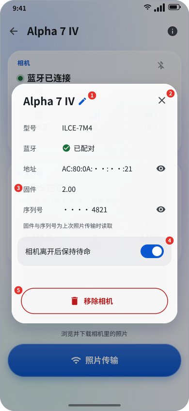
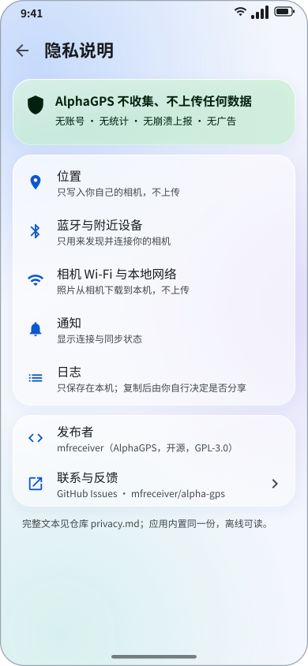
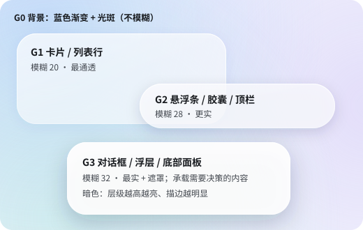
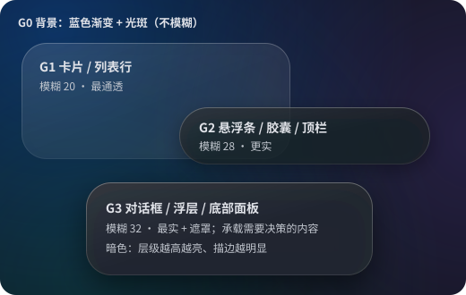
| 项 | 值 |
|---|---|
| 屏幕左右边距 | 16dp |
| 卡片圆角 / 内边距 | 28dp / 20dp |
| 列表行圆角 / 高度 | 24dp / 72–84dp |
| 内嵌信息块 | 圆角 18dp，onSurface 5%（暗 7%）填充 |
| 对话框 / 浮层圆角 | 28dp / 24dp |
| 对话框按钮 | 底部并排玻璃胶囊，高 48dp |
| 主按钮高度 | 56dp（设备页主入口 68dp） |
| 触控目标 | ≥ 48dp |
| 卡片间距 | 10–12dp |
| 标题 | 顶栏 22sp 左对齐（Q14）；首页 28sp |
RenderEffect）从 Android 12 起可用，因此玻璃面恒为真实模糊，不再设计 API 26–30 的近实色降级路径。升到 31 本身不会带来模糊，仍需按下条落地。Modifier.blur 模糊的是自身内容，不是背后内容。要得到“背后被模糊”需把背景渲染到独立图层再取样——已确认引入 Haze 库（Apache‑2.0，新依赖；用法见第 5 页）。| token / 用途 | 模糊半径 | 填充（亮） | 填充（暗） | 描边 1dp 渐变 （上→下，亮/暗） | 高光（左上斜向渐隐） | 阴影（亮 / 暗） |
|---|---|---|---|---|---|---|
| glass.card (G1) 卡片、列表行、设置分组 | 20dp | #FFFFFF 57% | #FFFFFF 7% | 白 95→35% 白 22→6% | 白 30% / 5% | y4 模糊16 #0B57D0 10%y4 模糊16 黑 30% |
| glass.float (G2) 悬浮条、下载进度胶囊 | 28dp | #F9FAFE 78% | #20252B 74% | 白 95→40% 白 26→8% | 白 22% / 6% | y6 模糊20 #0A1F44 18%y6 模糊20 黑 42% |
| glass.modal (G3) 对话框、视图选项浮层、底部面板、连接叠层 | 32dp | #FFFFFF 86% | #272C33 86% | 白 100→45% 白 30→10% | 白 18% / 7% | y12 模糊32 #0A1F44 24%y12 模糊32 黑 55% |
| glass.viewer (GV) 预览页所有面板（恒为暗） | 24dp | #101418 66% | 同左（不随主题） | 白 26→8% | 白 5% | y4 模糊16 黑 40% |
| tag.info 照片上的信息 tag（非玻璃） | 无 | 黑 60% | 黑 60% | 无 | 无 | 无 |
| scrim G3 背后的遮罩 | — | 黑 32% | 黑 52% | — | — | — |
GlassSurface 不再需要版本分支。| 场景 | 合成底色 | 文字 | 对比度 | 结论 |
|---|---|---|---|---|
| 亮 · G1 卡片 · 正文 onSurface | #E7EFFD | #191C20 | 14.8 : 1 | AA ✓ |
| 亮 · G1 卡片 · 次要 onSurfaceVariant | #E7EFFD | #42474E | 8.1 : 1 | AA ✓ |
| 亮 · G1 卡片 · 主色文字/图标 | #E7EFFD | #0B57D0 | 5.5 : 1 | AA ✓ |
| 亮 · G1 卡片 · 绿色状态字 | #E7EFFD | #1B6E3A | 5.4 : 1 | AA ✓ |
| 亮 · G3 对话框 · 错误色文字 | #F7FAFE | #BA1A1A | 6.2 : 1 | AA ✓ |
| 暗 · G1 卡片 · 正文 | #1E3E70 | #E0E2E8 | 8.2 : 1 | AA ✓ |
| 暗 · G1 卡片 · 次要 | #1E3E70 | #C2C7CF | 6.3 : 1 | AA ✓ |
| 暗 · G1 卡片 · 主色 | #1E3E70 | #A8C7FA | 6.2 : 1 | AA ✓ |
| 暗 · G3 对话框 · 错误色 | #232C3A | #FFB4AB | 8.3 : 1 | AA ✓ |
| 主按钮 · 亮（白字 / #0B57D0） | #0B57D0 | #FFFFFF | 6.4 : 1 | AA ✓ |
| 主按钮 · 暗（#062E6F / #A8C7FA） | #A8C7FA | #062E6F | 7.5 : 1 | AA ✓ |
| 预览 GV · 白字（底为黑） | #0B0D10 | #FFFFFF | 19.5 : 1 | AA ✓ |
| 预览 GV · 次要 #C4C9D1（底为黑） | #0B0D10 | #C4C9D1 | 11.7 : 1 | AA ✓ |
| 预览 GV · 白字（压在纯白照片上，最坏） | #616467 | #FFFFFF | 6.0 : 1 | AA ✓ |
| 信息 tag · 白字（压在纯白照片上，最坏） | #666666 | #FFFFFF | 5.7 : 1 | AA ✓ |
#C4C9D1 / #8E959E）只出现在黑底上的面板里。HazeState；背景 G0 与页面滚动内容标记 hazeSource(state)；玻璃面用 hazeEffect(state, style) 取样背后内容。GlassSurface(level, shape, content)；token 在 ui/theme/Glass.kt 映射为 HazeStyle，亮/暗各一份。Dialog 窗口），才能取样到页面内容。hazeEffect 的降级画法”。hazeSource；视图选项浮层取样的是打开瞬间的静态帧。| 角色 | 亮 | 暗 | 用途 |
|---|---|---|---|
| primary | #0B57D0 | #A8C7FA | 主按钮、开关、链接、当前步骤、选中描边 |
| onPrimary | #FFFFFF | #062E6F | 主按钮上的文字/图标 |
| primaryContainer | #D3E3FD | #0842A0 | 色调按钮、图标底、选中底 |
| onPrimaryContainer | #041E49 | #D3E3FD | 色调按钮文字 |
| secondaryContainer | #D8E3F8 | #3C4758 | 提示条（中性说明） |
| tertiary | #6B4FA8 | #CFBCFF | 仅关于页“支持上游作者”图标 |
| background（G0 基色） | #F3F6FC | #0E1217 | 背景渐变的底色 |
| onSurface | #191C20 | #E0E2E8 | 正文、标题 |
| onSurfaceVariant | #42474E | #C2C7CF | 次要文字、非主图标 |
| outline | #72777F | #8C9199 | 未激活图形、描边 |
| outlineVariant | #C2C7CF | #42474E | 步骤环轨道、禁用态 |
#F3F6FC / 暗 #0E1217）、
三个背景光斑色、tertiary 的一处使用。评分星色沿用 v1：★1 #90A4AE ★2 #4FC3F7 ★3 #66BB6A ★4 #FFB300 ★5 #FF7043（仅预览页详情用彩色；缩略图 tag 上统一白色）。| 角色 | 亮 | 暗 | 用途 |
|---|---|---|---|
| 成功 / 正常 | #1B6E3A | #7DDB93 | 已连接、已校正、已定位、已保存 |
| 成功容器 | #C8F0D2 | #0B5227 | 成功图标底 |
| 注意 | #7A5200 | #FFC857 | 未校正、未含位置、数据较旧 |
| 注意容器 | #FFE9B3 | #5C4200 | 注意提示条 |
| 错误 | #BA1A1A | #FFB4AB | 失败图标、移除、断开确认 |
| 错误容器 | #FFDAD6 | #93000A | 权限缺失条 |
| 光斑 1（蓝） | #A8C7FA | #0B57D0 | 背景左上 |
| 光斑 2（紫） | #CDBDF7 | #5B3FA8 | 背景右中 |
| 光斑 3（青） | #A6E6D6 | #0E6B5C | 背景左下 |
Theme.kt:36,43-46 未使用的 dynamicColor 参数；Color.kt 的 Purple 常量及
0xADD8E6FF 笔误；DeviceDetailScreen.kt:245-246、TransmissionDot.kt:36,62 的硬编码颜色。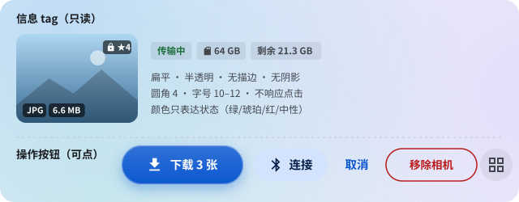
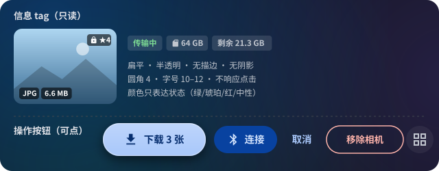
| 维度 | 信息 tag（只读） | 操作按钮（可点） |
|---|---|---|
| 视觉 | 扁平、半透明填充、无描边、无阴影 | 凸起：填充或描边 + 阴影/光晕 + 高光边 |
| 圆角 | 4dp（小方角） | 全圆胶囊或 ≥ 20dp |
| 颜色 | 中性；状态色只染文字/图标 | 主色（蓝）填充、蓝色文字，或红色描边（破坏性） |
| 尺寸 | 高 15–22dp，字号 10–12sp | 触控目标 ≥ 48dp，字号 ≥ 14sp |
| 交互 | 不可点，无涟漪，无按下态 | 涟漪 + 按下缩放 0.97，有禁用态 |
| 位置 | 贴在它描述的对象上（缩略图角、卡片角） | 顶栏右侧、卡片内右侧、屏幕底部 |
| 无障碍 | 合并进所属对象的朗读文本 | 独立焦点，角色 = 按钮 |
| 操作 | 形式 | 理由 |
|---|---|---|
| 返回 / 关闭 / 刷新 / 视图选项 / Ⓘ / 全选 | 图标 | 含义通用，顶栏空间有限；必须带 contentDescription 与长按提示 |
| 下载、照片传输、添加相机、搜索相机 | 图标 + 文字（填充主按钮） | 每屏唯一主操作，放底部 |
| 连接（蓝牙）、配对、重新读取、去授权 | 图标 + 文字 / 文字（色调按钮） | 次级操作，位于卡片内 |
| 取消、保存、重试、断开、移除（对话框内） | 文字（并排玻璃胶囊） | 取消在左（淡色）、确认在右（主色实底；破坏性为红色实底） |
| 移除相机（Ⓘ 底部） | 图标 + 文字（红色描边） | 破坏性入口，进入后仍需二次确认 |
| 断开蓝牙（相机卡右上） | 淡化图标（62% 不透明度，20dp） | 罕用且有代价：视觉最弱，但触控区仍 48dp；点后必弹确认 |
| 外部链接（帮助页） | 文字 + ↗ 图标 | 让用户预知会离开应用 |
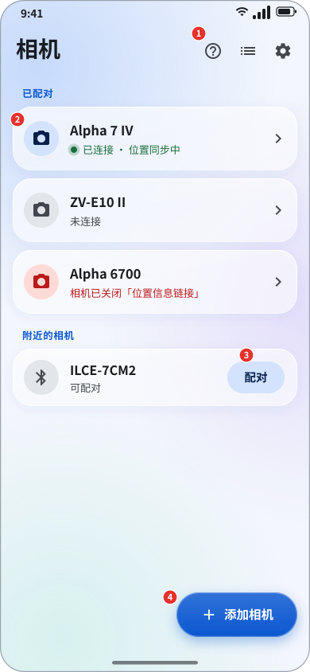
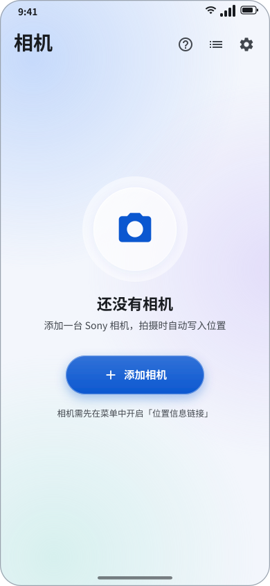
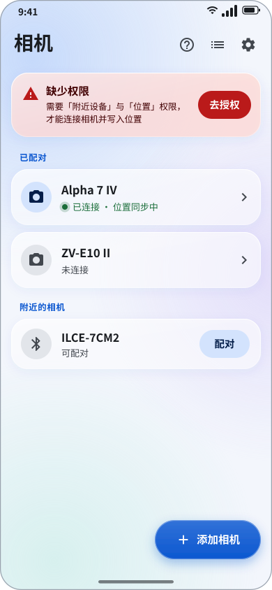
CameraDeviceManager.kt:123-127），用户返回后不再自动进入。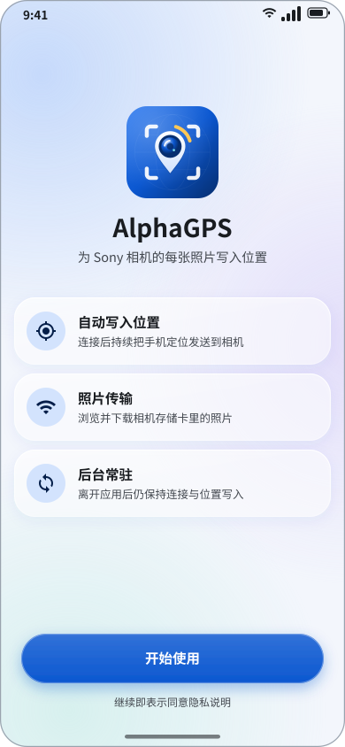
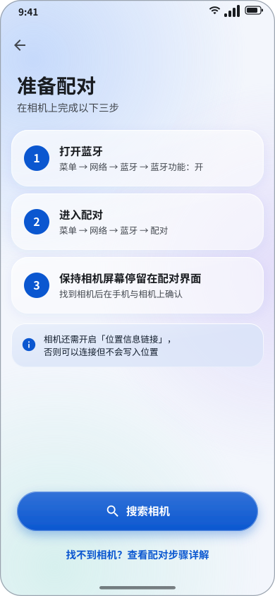
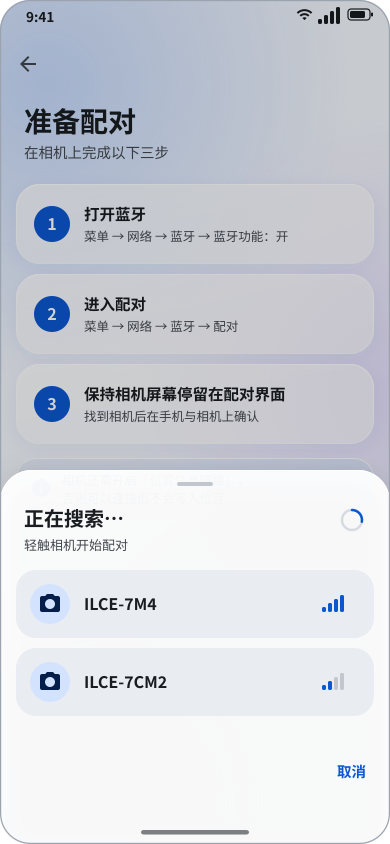
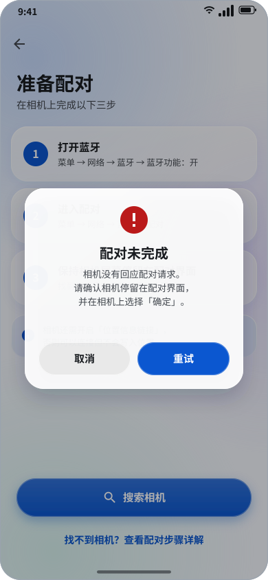
SharedPairingPreparationScreen.kt、PairingDialog.kt、PairingManager.kt、SharedWelcomeScreen.kt；
配对失败对话框 CameraDeviceManager.kt:381-422。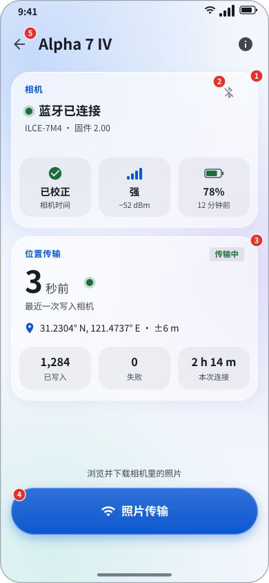
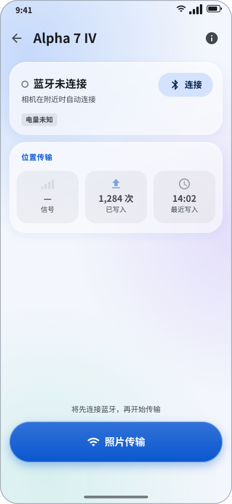
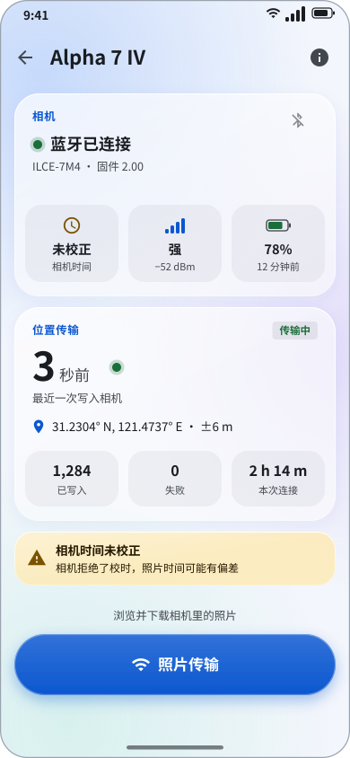
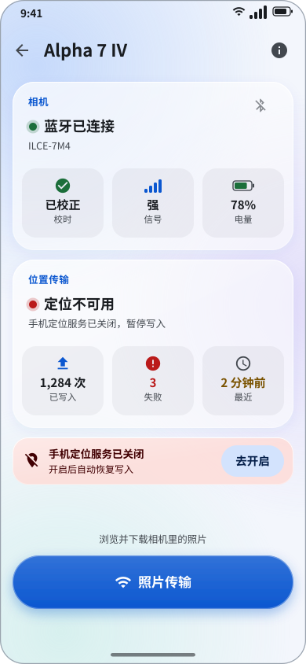
| 情况 | 状态行 | 副标题 | 三格 |
|---|---|---|---|
| 正常 | 绿点 · GPS 已定位 | 经纬度 · 误差 ±N m | 正常 |
| 尚未取得定位 | 转圈 · 正在定位… | 连接完成后自动开始写入 | 数值保留，“最近”为 — |
| 定位服务关闭 / 无权限 | 红点 · 定位不可用 | 一句原因 | “失败”“最近”着色；下方提示条给“去开启”（④） |
| 蓝牙未连接 | 空心点 · 未在传输 | 连接蓝牙后开始写入位置 | 变灰，“最近”显示上次写入时间（②） |
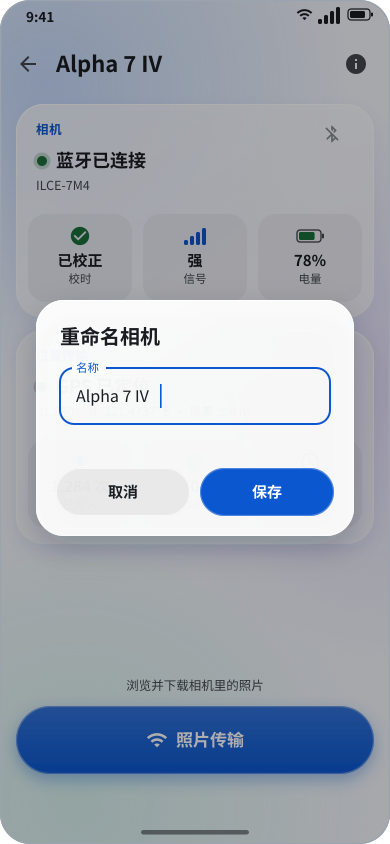
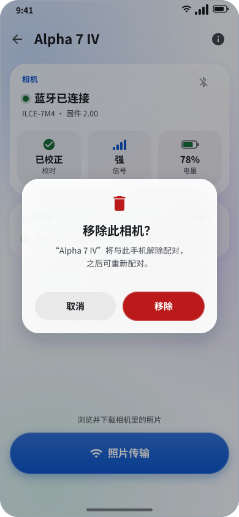
ServicePresenceCoordinator.kt:47-67、ConnectionDemandGate.kt:20-24）：它与“退出应用”无关，控制的是相机离开范围（关机/走远）之后——
开：后台服务与待连句柄保留，相机回来即自动连上；关：没有任何连接时服务停止，靠系统的设备出现通知再拉起（较慢、部分机型不可靠）。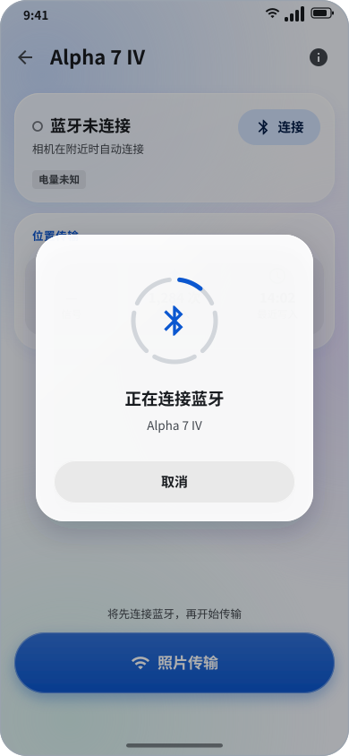
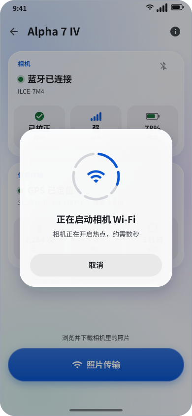
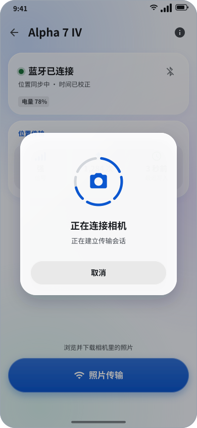
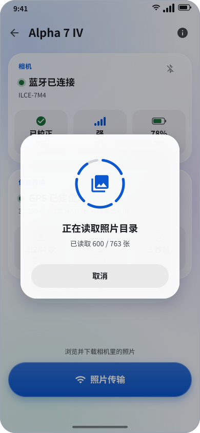
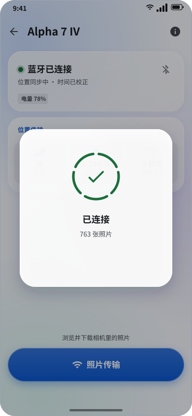
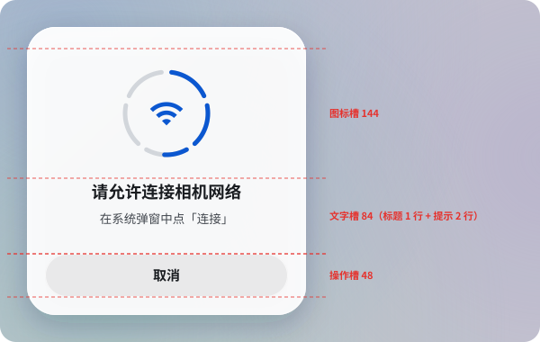
WifiRemoteScreen.kt 按 WifiRemotePhase 切换），含“返回 / 断开连接”两个按钮。v3 改为压在设备页上的叠层，
阶段映射：PreparingCamera→② · AwaitingNetworkApproval→③ · JoiningNetwork / OpeningSession→④ · 目录枚举→⑤。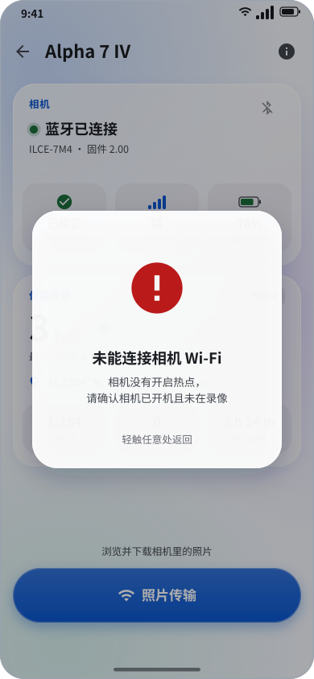
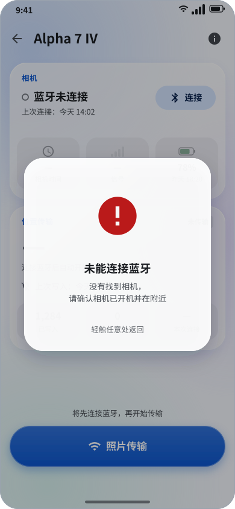
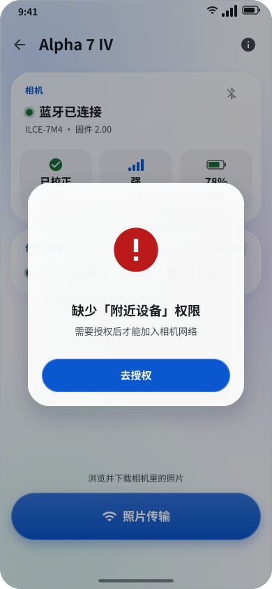
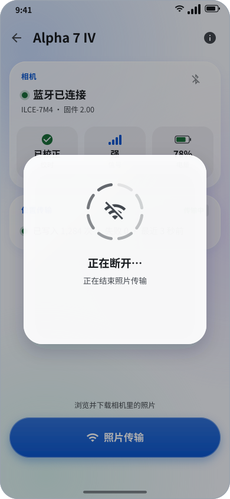
WifiConnectionHelp.kt:23-52，WifiRemoteScreen.kt:739）——v3 去掉“帮助”按钮，只保留权限场景的“去授权”。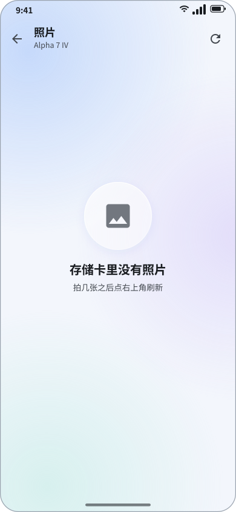
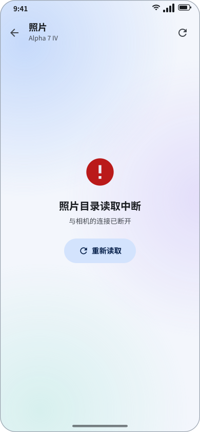
CatalogSnapshot.byDate）；本页不产生额外通信，封面缩略图除外。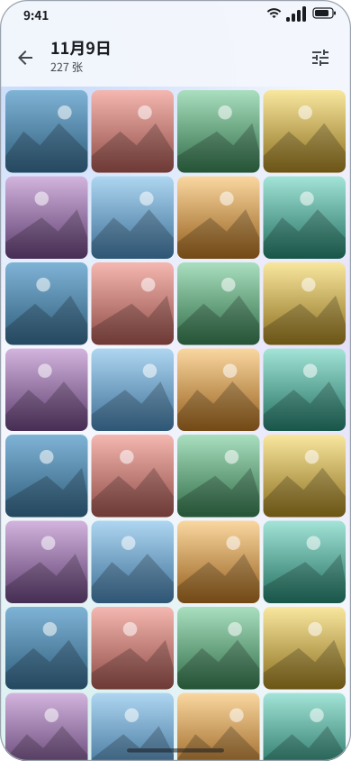
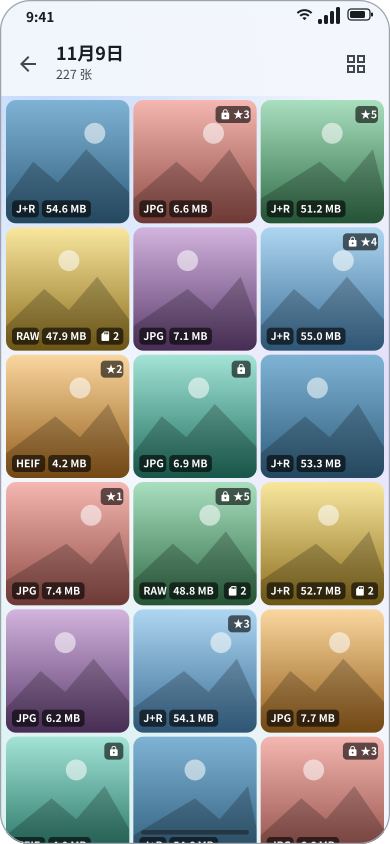
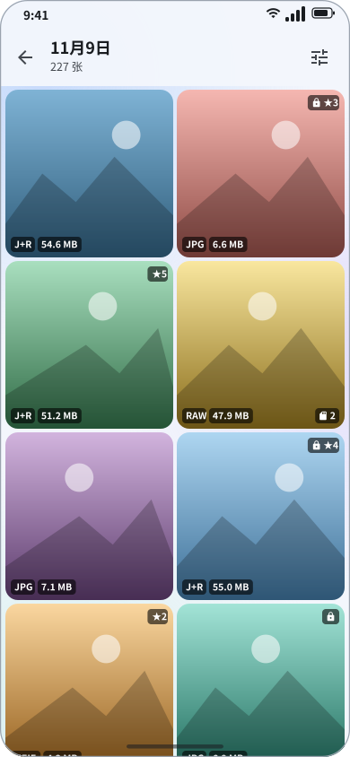
| 档位 | 列数（390dp 宽） | 最小格宽 | 圆角 | tag 字号 |
|---|---|---|---|---|
| 小（默认） | 4 | 80dp | 8dp | 9.5sp |
| 中 | 3 | 104dp | 10dp | 10.5sp |
| 大 | 2 | 150dp | 14dp | 10.5sp |
GridCells.Adaptive(minSize)，横屏/平板自动增多。grid_view，四宫格）。进入选择态靠长按任一照片。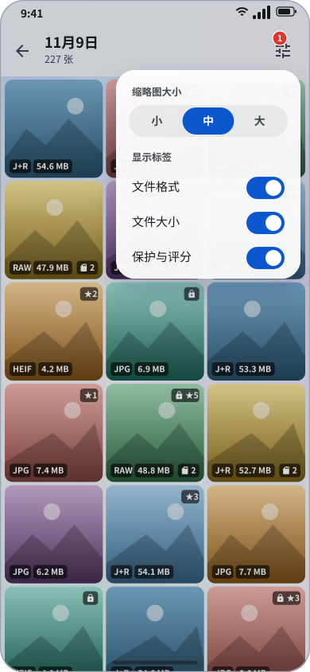
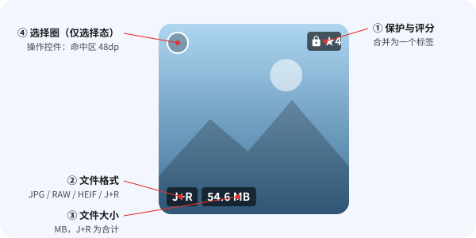
| 照片状态 | 右上角显示 |
|---|---|
| 有锁、无评分 | 只显示锁 |
| 无锁、有评分 | 只显示 ★n |
| 有锁、有评分 | 锁 + ★n（同一个标签内） |
| 都没有 | 不显示标签 |
grid_view（四宫格），取代原来像“筛选/调节”的 tune。图标本身不随档位变化：浮层打开时图标带主色容器圆底（选中态）；当前密度由浮层里的分段选择和网格本身体现，不加角标。SonyContentCatalog.kt:57 处目前跳过了这 8 个字节（take(8) // Rating, protection flag.）；
旧路径可从 ObjectInfo 的 ProtectionStatus 与属性 0xDC03 取得。读不到时该开关置灰并注明“此相机不提供”。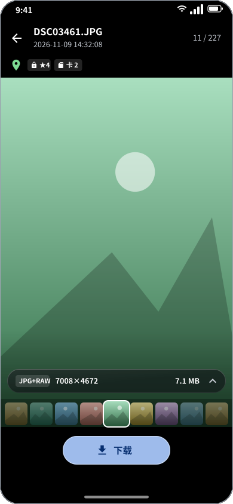
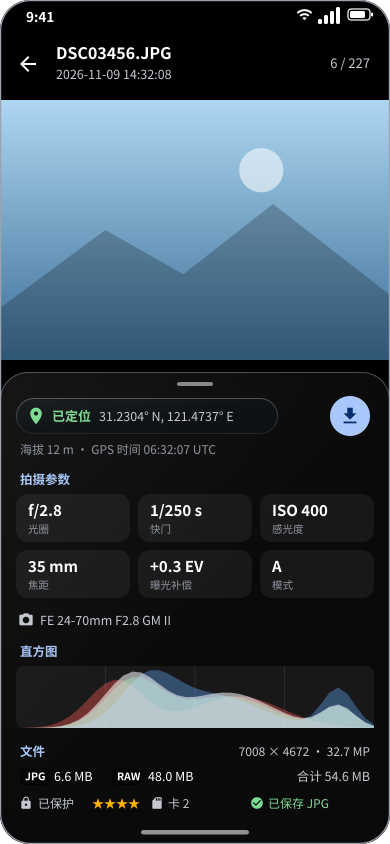
| 数据 | 现状（文件:行） | 状态 | 读不到时 |
|---|---|---|---|
| 照片属于哪张卡 | 新目录路径：目录条目自带卡槽号（句柄高位即卡槽，SonyContentCatalog.kt:43-44,85） | 已有 解析已有，界面未用 | — |
| 2 号卡的目录（新路径） | 目录请求参数固定为 1 号卡（SonyContentCatalog.kt:236-241），并校验 slot == 1（:230-234） | 待开发待实机核实 | 只显示 1 号卡，不出现“卡 2”小标；容量仍可分行 |
| 照片属于哪张卡（旧路径） | 枚举所有存储并合并句柄，但未记录归属（SonyImageTransfer.kt:169-172） | 待开发 | 不显示小标（两卡内容仍合并可见） |
| 每张卡的容量 / 剩余 | 存储信息查询（GetStorageInfo），按存储逐个读取 | 待开发待实机核实 | 读不到的卡不显示该行 |
| 两卡同名文件 | 同一日期下各自成项，靠“卡 2”小标区分；下载文件名冲突时追加 _2 | 待开发 | — |
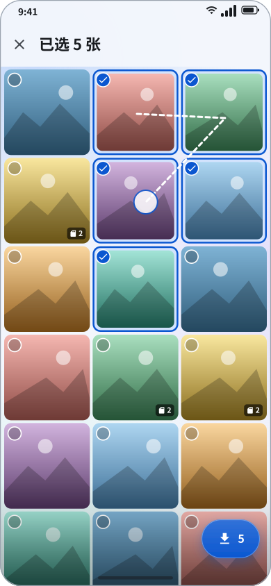
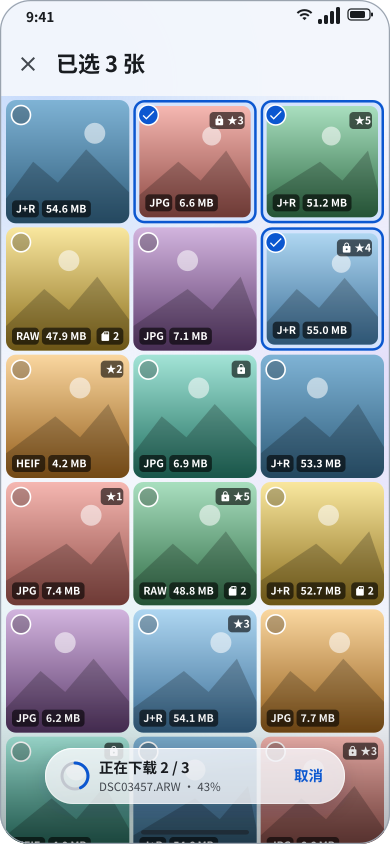
contentPadding.bottom = 胶囊 56 + 上下间距 32 + 系统导航条高度，最后一行可以完整滚到胶囊上方。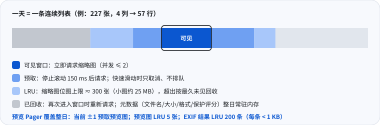
| 数据 | 加载范围 | 保留上限 | 规则 |
|---|---|---|---|
| 缩略图（网格） | 可见窗口 + 前 2 屏 / 后 3 屏（顺滚动方向） | 位图 LRU ≈ 300 张 | 并发 ≤ 2；快速滑动时取消未开始的请求；停稳 150 ms 后才预取 |
| 预览图（单张） | 当前 ± 1 | LRU 5 张 | 切换时取消更远的请求；ARW 走内嵌 JPEG |
| EXIF / GPS | 仅当前张，停留 ≥ 250 ms 才请求 | 结果 LRU 200 条 | 失败不自动重试；再次进入该张时重试 1 次 |
| 直方图 | 预览图解码后本地计算 | 随预览图缓存 | 零通信；256 级亮度，后台线程 |
| 胶片条 | 复用网格缩略图缓存，当前 ± 4 | 同缩略图 LRU | 缓存未命中才请求 |
| 元数据（名称/大小/格式/时间） | 整卡，连接时一次读入 | 整个会话常驻内存 | 现状已如此，无变化 |
CatalogSnapshot.byDate），分页只是界面层的切片（每页 60）。
真正的成本是缩略图请求——每张一次、串行走同一条相机通道——所以必须按“可见窗口”惰性加载并能取消，而不是一次要整日。LazyVerticalGrid；右侧显示快速滚动条，拖动时浮出时间气泡（“14:32”）。| 位置 | 调整 |
|---|---|
SonyImageTransfer.kt:456 PAGE_SIZE=60；:140,:190,:194-196,:217 pagePhotos 限定 | 缩略图/预览只应答“当前页”句柄 → 改为应答“当前日期”全部句柄 |
WifiCatalogSnapshot.kt:99 page(dateKey, offset)；WifiCameraCapture.kt:26-28；SonyContentCatalog.kt:151-153 | 按日期返回整日列表，去掉 offset |
WifiPhotoBrowser.kt:423、WifiPhotoPager.kt:48、WifiPhotoPaging.kt:7 | 删除翻页条与页数计算 |
WifiPhotoViewer.kt:203-206 Pager、:111-136 预取、:261-291 ‹ › 按钮 | Pager 页数 = 当日总数；删除跨页切换逻辑与 ‹ › 按钮 |
WifiRangeSelection.kt、WifiPhotoTopBar.kt 全选（本页） | 拖选与全选范围 = 本日 |
字符串 wifi_remote_browser_* 分页相关、viewer_previous_photo/next_photo | 删除 |
第三轮修订：文件大小只出现一处；定位与锁星移到上方；顶栏只剩文件名、时间、序号。横图、竖图同一布局——照片按比例居中铺满，部件半透明叠在上下两端，照片够高就交叠，不够高就落在黑底上。
| 信息 | 来源 | 通信成本 | 状态 | 读不到时 |
|---|---|---|---|---|
| ① 文件信息：格式、JPG/RAW 各自大小、已保存 | 目录元数据 + 本地下载记录 | 零通信 | 已有 | 始终可用 |
| ① 保护、评分 | 目录字段（新路径 8 字节，现被跳过）/ 旧路径 ObjectInfo | 零通信 | 待实机核实 | 读不到 → 不显示该 tag |
| ② 拍摄参数：光圈/快门/ISO/焦距/镜头/曝光补偿 | EXIF 子目录（ExifIFD） | 约 64 KB / 张 | 待开发 待实机核实 | “—” + 灰字说明 |
| ③ 定位状态与坐标、海拔、GPS 时间 | EXIF 的 GPS 子目录（GPS IFD） | 与 ② 同一次请求 | 待开发 待实机核实 | 区分“未含位置”与“不可用” |
| ④ 直方图 | 由已下载的预览图本地计算 | 零通信 | 待开发 | 预览图失败则不显示 |
| ⑤ 像素尺寸、百万像素 | EXIF PixelXDimension/YDimension（或 ARW 主目录宽高） | 与 ② 同一次请求 | 待开发 待实机核实 | 读不到 → 该行隐藏 |
| ⑥ 胶片条缩略图 | 复用网格缩略图缓存 | 零通信（未命中才请求） | 待开发 | 占位色块 |
| ⑦ 所在存储卡（卡 2 小标） | 目录句柄里的卡槽号 / 旧路径的存储 ID | 零通信 | 待开发 待实机核实 | 不显示小标（见第 17 页） |
| 项 | 依据 / 现状 | 结论 |
|---|---|---|
| 新目录路径（v4，多数新机型） | SonyContentCatalog.read 操作码 0x923d，64 位偏移（SonyContentCatalog.kt:172-191） | 已有 下载与 ARW 预览已在用 |
| 旧路径 | GET_PARTIAL_LARGE_OBJECT 0x9211，不支持时退回标准 PTP GetPartialObject 0x101b（32 位偏移）（SonyImageTransfer.kt:430-448） | 已有 下载已在用 |
| 读文件头的先例 | SonyArwPreview.read 已读取 ARW 前 64 KB 并遍历 TIFF 主目录（SonyArwPreview.kt:42-91） | 已有 |
| JPEG 的 EXIF 解析 | SonyJpeg.kt:50-59 已有宽松的 APP1/IFD 遍历，但只取方向；需扩展到 ExifIFD（0x8769）与 GPS IFD（0x8825） | 待开发 |
| JPG：EXIF 是否在前 64 KB | APP1 段上限 64 KB 且紧跟文件头，理论上必然在内；Sony 机型的 MakerNote 较大，需确认 GPS IFD 偏移未超出 | 待实机核实 |
| ARW：子目录是否在前 64 KB | 主目录在头部已验证；ExifIFD / GPS IFD 的实际偏移未验证，超出时需按偏移再读一次 | 待实机核实 |
| HEIF：EXIF 位置 | EXIF 是 meta/iloc 指向的独立项，不保证在文件头；目前只有本地文件的 HeifDecoder.readExif（AndroidHeifConverter.kt:44-47） | 待实机核实 可能需两次读取；首版可对 HEIF 只显示①④⑥⑦ |
| 相机返回的预览/缩略图 JPEG 是否自带完整 EXIF | 已知带方向（SonyImageTransfer.kt:206,246）；若同时带 GPS 与曝光参数，则 ②③⑤ 可零额外请求 | 待实机核实 优先验证这一条 |
| 写入 GPS 的坐标与手机发送值是否一致 | 相机写入的是它收到的最近一次定位，可能滞后数秒 | 待实机核实 只展示照片内的值，不做比对 |
isAppEnabled 语义不变）。DebugDonationDialogCard.kt，SettingsScreen.kt:177）。SettingsScreen.kt:147-178（Overview 顺序）、AppControlsCard.kt、LogLevelSettingsCard.kt、
SharedLanguageSettingsCard.kt、BatteryOptimizationCard.kt、SharedLogViewerScreen.kt。HelpScreen.kt:274-287）移到关于页。IosTipJarController.kt、IosSettingsScreen.kt:58-64,101-120,226-229、IosAppDialogHost.kt:70,289），Android 没有任何界面入口；tip_jar* 文案对 Android 是死文案，随 W2 的文案整理删除。| 现有入口 | 位置 | v3 |
|---|---|---|
| 设备清单顶栏“帮助”图标 | DevicesScreen.kt:95-121 | 保留（唯一入口） |
| 设备页 → Ⓘ 内“帮助”文字按钮 | DeviceInfoDialogs.kt:91,153-154；CameraDeviceManager.kt:366 | 移除 |
| 连接失败时的帮助对话框 | WifiConnectionHelp.kt:23-52；WifiRemoteScreen.kt:739 | 移除（权限场景改为叠层内“去授权”） |
| 设备清单底部“需要帮助？” | DeviceListLayout.kt:26,45 | 移除（与顶栏重复） |
| 错误行上的“打开指南” | SharedDeviceList.kt:382-394 | 移除（原因直接写在行内） |
| 配对准备页底部引导链接 | SharedPairingPreparationScreen.kt:56,107-113 | 保留为流程内引导（Q22 已确认） |
| 配对失败对话框“打开指南” | CameraDeviceManager.kt:381-422 | 改为“重试 / 取消”，正文写清原因（Q22 已确认） |
| 对象 | 许可 | 依据 | 结论 |
|---|---|---|---|
| 本应用 AlphaGPS | GPL‑3.0（与上游相同） | 仓库根 LICENSE | 无冲突 |
| libheif 1.23.5 / libde265 1.1.3 | LGPL‑3.0‑or‑later | 子模块源码构建、独立 .so；声明已随包 heif/src/main/assets/licenses/ | 兼容 |
| Kotlin、kotlinx、AndroidX / Compose、Room、Material、Accompanist | Apache‑2.0 | gradle/libs.versions.toml | 兼容 |
| 应用内功能图标（Material Icons / Material Symbols） | Apache‑2.0 | 抽查 ic_gps_fixed.xml、welcome_ready_24px.xml 与官方图标同形（父会话盘点） | 在许可页补来源声明 |
| Haze（待引入） | Apache‑2.0（按已知信息） | 引入时以其仓库 LICENSE 为准 | 引入时核对 |
| Timber、com.diamondedge:logging | 各自许可 | 未逐一核对许可文本 | 开发时核对 |
| Sentry SDK、Play review | — | 第三轮定案：Sentry 完全移除；不做应用市场分发 | 随 W2 移除 |
| 应用图标 | GPL‑3.0，自绘 | docs/brand/alpha-gps-icon.svg（提交 1c6c7be） | 已替换上游图标 |
| 上游素材与第三方徽标 | 见第 27 页 | 逐项清单与处置建议 | 待用户确认 |
前提是第三轮定案 Sentry 完全移除：移除之后才能如实写“无崩溃上报”。所以 privacy.md 的定稿与应用内页面要在 W2“移除 Sentry”合入之后发布。
| 小节 | 新版 privacy.md 草稿要点 |
|---|---|
| 发布者 | mfreceiver（AlphaGPS）。源码：github.com/mfreceiver/alpha-gps（仅此一处）。 |
| 一句话结论 | AlphaGPS 不收集、不上传任何数据。没有账号、统计、崩溃上报、广告，也没有向第三方发送数据的 SDK。 |
| 位置 | 仅在你授权后读取手机定位，只通过蓝牙写入你自己的相机；不上传、不留历史。 |
| 蓝牙与附近设备 | 用于发现、配对并连接你的相机；不扫描或记录其它设备。 |
| 相机 Wi‑Fi 与本地网络 | 只用于连接相机自身的热点浏览和下载照片；照片保存到本机相册，不上传。 |
| 通知 | 显示连接与位置同步状态。 |
| 日志 | 只保存在本机；复制或导出由你自行决定是否分享。定稿前核对现有日志是否记录坐标：若记录，改为不记录或在此如实写明。 |
| 权限一览 | 定位（含后台）、蓝牙 / 附近设备、附近 Wi‑Fi 设备 / 本地网络、通知——逐项写明用途与“拒绝后的影响”。 |
| 数据保留与删除 | 应用数据都在本机；移除相机或卸载应用即清除。已下载的照片属于你的相册。 |
| 联系 | GitHub Issues：github.com/mfreceiver/alpha-gps/issues；不留个人邮箱（Q27）。 |
| 变更 | 本文随版本更新，改动记在仓库提交历史里。 |
privacy.md:4,97）、EU Sentry 段、Google Play services 同意段、儿童条款模板、生成器署名等。| 部分 | 内容 |
|---|---|
| 名称与定位 | AlphaGPS：把手机位置写入 Sony 相机的照片，并通过相机 Wi‑Fi 浏览、下载照片。 |
| 删除 | 遥控拍摄、Sentry、商店徽章与链接（Google Play / F‑Droid / App Store / Obtainium）、外链截图、赞助图片、website 引用。 |
| 保留并改名 | 构建、签名与发版说明（包名 cn.vectory.alphagps、仓库名 alphagps 保持小写）。 |
| 致谢与来源 | fork 自 Saschl/alpha-gps，GPL‑3.0；修改者 mfreceiver，自 2026‑11。保留原致谢：anoulis/sony_camera_bluetooth_external_gps、mlapaglia/AlphaSync。 |
| 新增 | 商标声明；隐私说明链接；系统要求 Android 12（API 31）及以上、仅 arm64。 |
| 赞助 | README 不放赞助链接；“支持上游作者”只在应用的关于页。 |
cn.vectory.alphagps、仓库名 alphagps、文件名 alpha-gps-*；上游仓库名 Saschl/alpha-gps 与 GitHub 分叉 mfreceiver/alpha-gps 是地址，原样书写。docs/wifi-architecture.md:87-89 的旧系统路径描述；strings 里的 sentry_*、tip_jar*、遥控拍摄引导等过时文案（英文与简体中文两处同步）；FAQ 里提到崩溃报告与邮箱的答案。| 处置 | 素材 | 位置 / 来源 | 理由 |
|---|---|---|---|
| C 删除 | Apple App Store 徽章 | 仓库根 Download_on_the_App_Store_Badge_*.svg | 外部品牌素材；不做应用市场分发 |
| C 删除 | F‑Droid 徽章、Sentry 标志 | website/public/branding/ | F‑Droid 徽章为 CC‑BY‑SA‑3.0 外部素材；Sentry 已移除 |
| C 删除 | README 的商店徽章、外链截图、Buy Me a Coffee 外链图 | README.md | 不做市场分发；赞助只留关于页一处 |
| C 删除 | website/ 整个目录 | 含 icon.svg、og-image.svg | 上游宣传站，下载链接全指向上游商店 |
| C 删除 | fastlane/ 整个目录 | 上游截图、图标、旧更新说明 | 商店元数据，本项目不用 |
| C 删除 | .github/FUNDING.yml | 指向上游赞助账号 | 避免分叉仓库显示上游赞助按钮 |
| B 重绘 | 根目录 icon.svg | 上游图标 | 用 docs/brand/alpha-gps-icon.svg 取代 |
| B 重绘 | 启动图标前景 / 背景 | drawable/ic_launcher_foreground.xml、ic_launcher_background.xml（上游 2025‑08） | 由新图标三层（前景 / 背景 / 单色）转换取代，见 W2 |
| B 重绘 | iOS AppIcon icon.png | 与上游 fastlane 图标同源；iOS 已禁用 | 用新图标重新导出替换（不做 iOS 功能） |
| A 保留 | 应用内功能图标 | app/res/drawable 13 个 + sharednew composeResources/drawable 22 个 | 与 Material Icons / Symbols 同形，Apache‑2.0；在许可页补来源声明，不重绘 |
| A 保留 | iOS AccessoryCamera/camera.svg | 上游自绘的通用相机图形 | iOS 已禁用，随仓库 GPL‑3.0 保留 |
| A 保留 | docs/design 全部、docs/brand 全部 | 项目自绘 | 保留 |
| A 保留 | heif 子模块内 libde265.png、shopify.svg | 子模块自带的文档素材 | 不打进 APK，原样不动 |
icon.svg、fastlane、website/ 内都没有独立的许可或作者声明，仓库根只有 GPL‑3.0 的 LICENSE。fastlane/ 与 website/ 整目录）。privacy.md、strings 里的长文案按第 26 页重写，不是素材处置问题。#0B57D0 / 暗由系统自动提亮），取代目前的默认灰。| 类型 | 标题 | 正文 | 渠道 | 说明 |
|---|---|---|---|---|
| 待命（静默） | 等待相机 | 相机不在附近，回到范围后自动连接 | 低 · 无声 | 灰色图标；“相机离开后保持待命”开且无连接时 |
| 同步中 · 单台（静默） | Alpha 7 IV · 位置同步中 | 已连接，正在向相机写入位置 | 低 · 无声 | 标题带相机名，一眼可辨 |
| 同步中 · 多台（静默） | 2 台相机 · 位置同步中 | Alpha 7 IV、ZV-E10 II | 低 · 无声 | 正文列出名称 |
| 已断开（提醒） | 相机已断开 | Alpha 7 IV · 14:02 断开，位置写入已停止 | 默认 · 有声（可在提示音设置里关） | 用户主动断开时不发；可滑走 |
NotificationsHelper.kt:31-66 三个渠道（待命 低 / 传输 高+声 / 断开 默认+声）；构建函数 :76-168，均无操作按钮、未设置强调色。#20252B 74%，G3 = #272C33 86%。#0E1217，三处光斑降到 26–42% 不透明度：能看出蓝紫青的气氛，但不干扰文字。#A8C7FA，主按钮上的文字为深蓝 #062E6F；绿、琥珀、红均换为暗色版本（第 6 页）。| 用户动作 | 现状 · 蓝牙+GPS | 现状 · Wi‑Fi | v3 · 蓝牙+GPS | v3 · Wi‑Fi | 改动 |
|---|---|---|---|---|---|
| Home / 切到其它应用 | 保持 | 保持（现状：一直保持） | 保持 | 下载中保持到完成；否则离开前台 30 s 后结束（Q17 已确认） | Wi‑Fi 需改 |
| 根页（设备清单）返回 | 断开并停止服务 | 结束 | 保持；只结束界面，不从最近任务移除（Q19） | 立即结束 | 需改 |
| 从最近任务划掉 | 断开并停止服务 | 结束 | 保持（前台服务续跑） | 结束 | 需改 |
| Activity 被销毁（isFinishing） | 断开并停止服务 | 结束 | 保持 | 结束 | 需改 |
| 设备页返回 → 设备清单 | 保持 | — | 保持 | — | 无改动 |
| 日期列表返回 → 设备页 | 保持 | 结束 | 保持 | 结束（叠层“正在断开…”） | 行为不变，界面改为叠层 |
| 设备页“断开蓝牙”并确认 | 断开（原为页面上的按钮） | 结束 | 断开，记为用户主动断开 | 结束 | 入口改为小图标 + 确认 |
| Ⓘ “移除相机”并确认 | 断开并解除配对 | 结束 | 同左 | 同左 | 无改动 |
| 设置“位置同步”总开关关闭 | 全部断开、服务停止 | 结束 | 同左 | 同左 | 无改动 |
| 手机重启 | 自动重连已启用的相机 | — | 同左；用户主动断开的不重连 | — | 无改动 |
| 情形 | 行为 |
|---|---|
| 此前处于连接状态（含离开应用期间一直连着） | 保持 / 断线后自动重连 |
| 从未连接过（刚配对完成除外） | 不自动连；等用户点“连接”或“照片传输” |
| 用户上次在设备页主动断开 | 不自动连，包括重新打开应用、手机重启、相机回到范围 |
| 用户点“照片传输”而蓝牙未连 | 自动先连蓝牙 → 启动 Wi‑Fi → 读取目录；视为用户主动触发，此后恢复自动连接 |
LocationSenderService.kt:164-169 注释）。会触发“退出即断开”的只有三个入口，
全部汇到 AppServices.disconnectAllOnExit（AppServices.kt:89-91）——真实改动面就是这三处，见第 32 页。| 数据 | 显示位置 | 来源 | 刷新时机 | 回退显示 | 状态 |
|---|---|---|---|---|---|
| 相机时间（校时） | 设备页相机卡 | 蓝牙：校时写入的应答（仅 applied=1 视为已校正） | 每次蓝牙连接后 1 次 | 未校正=琥珀；未知=“—” | 待开发 |
| 信号强度 | 设备页相机卡 | 蓝牙 RSSI | 连接后首读 + 每 5 s（仅设备页可见时） | “—” | 待开发 |
| 电量 | 设备页相机卡 | Wi‑Fi 会话就绪后读 1 次，缓存 | 每次照片传输会话 | ≤30 分钟只显示数值；30 分钟–24 小时变灰并加一行缓存时间；更久“—” | 待开发 待实机核实 |
| GPS 定位状态、手机经纬度与误差 | 设备页位置卡状态行 | 手机定位服务（已有的位置来源） | 每次定位更新 | “正在定位…” / “定位不可用” | 待开发 |
| 最近写入时间 | 设备页位置卡三格 | 蓝牙写入结果 | 每次写入（界面每秒刷新相对时间） | 未连接时显示上次写入时间 | 待开发 |
| 已写入 / 失败次数 | 设备页位置卡三格 | 本机计数（会话内） | 每次写入 | 未连接时保留上次计数、变灰 | 待开发 |
| 型号、蓝牙地址 | Ⓘ | 配对记录 | 打开 Ⓘ 时 | — | 已有 |
| 固件、序列号 | 仅 Ⓘ（显示上次读取值） | Wi‑Fi：设备信息，读到后缓存 | 每次会话就绪 | 未读过=“连接照片传输后可见” | 待开发 |
| 卡容量 / 剩余（按卡分行） | 仅日期列表顶部 | Wi‑Fi：每张卡各一份存储信息 | 每次会话就绪 + 刷新 | 读不到=不显示；只有一张卡时只显示一行 | 待开发 |
| 照片所在存储卡（待实机验证后落地） | 网格、预览状态行的“卡 2”小标 | 目录句柄卡槽号 / 旧路径存储 ID | 随目录 | 读不到或只有一张卡有内容=不显示 | 待开发 待实机核实 |
| 蓝牙配对状态 | Ⓘ | 系统配对记录 | 打开 Ⓘ 时 | — | 已有 |
| 照片目录（名称/大小/格式/时间） | 日期列表、网格、预览 | Wi‑Fi：整卡目录 | 连接时 + 手动刷新 | 读取中断页 | 已有 |
| 保护、评分 | 网格 tag、预览状态行 | 目录字段 / 旧路径对象属性 | 随目录 | 读不到=不显示，开关置灰 | 待开发 待实机核实 |
| 缩略图 | 网格、胶片条、日期封面 | Wi‑Fi：缩略图请求 | 可见窗口惰性 | 占位色块 | 已有（需解除页限定） |
| 预览图 | 预览页 | Wi‑Fi：预览请求 / ARW 内嵌 JPEG | 当前 ± 1 | 缩略图放大 + “预览不可用” | 已有 |
| 拍摄参数、定位、像素尺寸 | 预览状态行 / 信息条 / 详情 | Wi‑Fi：文件前 64 KB 的 EXIF | 仅当前张，停留 250 ms 后 | “—” / “不可用”，区分“未含位置” | 待开发 待实机核实 |
| 直方图 | 预览页 | 本地由预览图计算 | 预览图就绪后 | 不显示 | 待开发 零通信 |
| 文件大小（按下载策略） | 预览信息条（唯一一处） | 目录元数据 + 下载格式偏好 | 随目录 | — | 已有 |
| 已保存状态 | 预览页 | 本机下载记录 | 下载完成时 | — | 已有 |
| 视图偏好（档位、三个标签开关） | 网格 | 本机偏好存储 | 修改即存，全局生效 | 默认：小、全关 | 待开发 |
| 预览信息条的三个可选项 | 设置 → 预览信息条 | 本机偏好存储 | 修改即存 | 默认全关 | 待开发 |
docs/design/history/ui-status-enhancement/SPEC.md）中的字段定义、阈值与写入位置继续有效：
校时状态、RSSI 读取、GPS 统计、电量缓存、设备信息、存储信息、保护评分。本版新增：EXIF/GPS、直方图、胶片条复用、视图偏好、存储卡归属、信息条可选项。| 差异 | 现有实现（文件:行） | 需要的调整 |
|---|---|---|
| 离开应用不再断开蓝牙 （根页返回 / 划卡 / Activity 销毁） | MainActivity.kt:73-86 onDestroy(isFinishing) → disconnectAllOnExit + stopServiceMainActivity.kt:124-138 根页返回 finishAndRemoveTask()LocationSenderService.kt:170-181 onTaskRemoved → disconnectAllOnExit + stopSelfAppServices.kt:76-80,89-91；AppExitCoordinator.kt:21-33；AppExitGate.kt:121-137 | 三个入口都改为只结束 Wi‑Fi（保留 wifiRemote.closeAndJoin()），去掉“停会话 / 断蓝牙 / 停服务”。根页返回改为只结束界面、不从最近任务移除（Q19 已确认）。AppExitGate 的属主/代际逻辑只为退出拆除而存在，可大幅简化；todo P3#8 的残余风险随之基本消失。 |
| 重新打开应用时的自动重连 | MainActivity.kt:164-189（注释：退出会断开，所以打开要重连） | 保留作为兜底，但只针对“已启用且非用户主动断开”的相机；注释与测试同步更新。 |
| 保持不变的路径 | Home/后台（LocationSenderService.kt:164-169）；断开单台 ServiceCommandRouter / DeviceDisconnectCoordinator；移除 DeviceRemovalCoordinator；开机重连 ServiceShutdownCoordinator.kt:28-48；服务真正销毁 LocationSenderService.kt:184-201；总开关 isAppEnabled | 不改。 |
| Home 时的 Wi‑Fi | AndroidWifiRemoteScreen.kt:87-96（现状：后台保持 Wi‑Fi，离开该页才结束） | 增加“离开前台 30 s 后结束”；下载中保持到完成；根页返回与划卡立即结束（Q17 已确认）。 |
| “保持活跃”语义 | ServicePresenceCoordinator.kt:47-67；ConnectionDemandGate.kt:20-24；LocationSenderService.kt:77-109 | 逻辑不变；改名“相机离开后保持待命”、默认开（Q18 已确认）；删除说明文字 device_info_keep_active_hint。 |
docs/todo.md P1#9 中“退出应用仍断开”的冒烟预期，以及相关单元测试（AppExitGate / AppExitCoordinator）。donation_dialog_*、sentry_settings / enable_sentry* / sentry_consent_*、tip_jar*、遥控拍摄引导文案、分页相关 wifi_remote_browser_*、viewer_previous_photo/next_photo、device_info_keep_active_hint、wifi_connection_help_*、wifi_remote_close。| 差异 | 现有实现（文件:行） | 需要的调整 |
|---|---|---|
| 移除自动赞助提醒 | Android：CameraDeviceManager.kt:45-48,82-83,143,178-214,252,424-449；MainActivity.kt:200-204,275-278；PreferencesManager.kt:23-26,148-195；DebugDonationDialogCard.kt（整文件）；SettingsScreen.kt:177字符串 donation_dialog_*（en + zh-rCN） | 全部删除。HelpScreen.kt:274-287 的手动链接移到关于页“支持上游作者”，全应用仅此一处。 |
| 帮助入口收敛 | 见第 24 页清单（DeviceInfoDialogs.kt:91,153-154、WifiConnectionHelp.kt、DeviceListLayout.kt:26,45、SharedDeviceList.kt:382-394 等） | 只留设备清单顶栏入口。 |
| 取消日期内分页 | 见第 19 页清单（SonyImageTransfer.kt:456 等） | 整日列表 + 惰性加载 + LRU。 |
| 主题蓝色化 + 玻璃 | Theme.kt:36,43-46；Color.kt；DeviceDetailScreen.kt:245-246；TransmissionDot.kt:36,62 | 固定蓝色色板；新增 Glass.kt 与 GlassSurface；引入 Haze（gradle/libs.versions.toml 新依赖）；minSdk 31，无降级分支；不启用动态色。 |
| 设备页重排与断开入口 | ui/device/DeviceDetailScreen.kt（shared 306 行）；DeviceDetailViewModel.disconnect | 两卡同构 + 底部主入口；相机卡与位置卡各一行状态 + 三格“图标/数值/项目名”；连接/断开的描边大按钮 → 卡内“连接”与淡化小图标 + 确认框；增加“连接中可取消”。 |
| Ⓘ 精简 | DeviceInfoDialogs.kt（222 行） | ✕ 关闭、✎ 重命名、去掉帮助与 OK、去掉 MTU、不放卡容量、固件与序列号显示上次读取值、底部红色描边“移除相机”。 |
| 设备清单 | SharedDeviceList.kt:251-310 左滑删除；:314-416 DeviceCard | 去掉左滑删除；玻璃行；“添加相机”悬浮主按钮。 |
| 连接过程改叠层 | WifiRemoteScreen.kt（757 行，按 WifiRemotePhase 整页切换） | 设备页之上的固定槽位叠层；蓝牙未连时前置蓝牙阶段。 |
| 照片浏览顶栏 | WifiPhotoTopBar.kt（刷新 + 断开；选择态 全选本页 + 下载） | 去掉“断开”图标（返回即结束）；下载移到悬浮胶囊；全选=本日。 |
| 视图选项与标签 | WifiPhotoBrowser.kt（632 行） | 入口图标换为 grid_view；小/中/大、三个开关、合并标签、全局持久化。 |
| 预览页 | WifiPhotoViewer.kt（314 行） | 顶栏去掉大小；状态行（定位 · 锁星）+ 信息条（格式 · 分辨率 · 大小）+ 胶片条 + 下载、上滑详情、三档窗口适配、EXIF/GPS；删 ‹ › 按钮。 |
| 对话框按钮 | 各处 AlertDialog（DeviceInfoDialogs.kt、SharedDeviceList.kt:88-111,251-310、CameraDeviceManager.kt:381-422 等） | 统一为自绘 G3 面板 + 底部并排胶囊（一个共用组件）。 |
| 多存储卡 | SonyContentCatalog.kt:230-241（只取卡槽 1）；SonyImageTransfer.kt:169-172（合并但不记归属） | 读取两个卡槽并记录归属；容量按卡；见第 17 页。待实机核实后才开工。 |
| 设置、日志、关于 | SettingsScreen.kt:147-178；SharedLogViewerScreen.kt；HelpScreen.kt | 新增“预览信息条”子页；删“崩溃报告”项；日志加复制；新增关于页、许可页、隐私说明页。 |
| 通知 | NotificationsHelper.kt:31-168 | 强调色、文案带相机名、同步中改静默渠道、按状态换小图标。 |
sharednew/src/commonMain/kotlin/com/sasch/cameragps/sharednew/ui/，Android 壳在 app/src/main/java/com/saschl/cameragps/。
iOS 目标已禁用且不在设计范围。行号基于 HEAD 587f510；第 33 页的清理清单行号来自父会话的盘点，开工前复核。| 项 | 位置 |
|---|---|
| minSdk 三处 | app/build.gradle.kts:22-26,48-55；sharednew/build.gradle.kts:268-276；heif/build.gradle.kts:5-12 |
| 旧蓝牙 / 定位权限分支 | PermissionBox.kt:101-135,424-447；DevicesScreen.kt:71-87（<31 的 BLUETOOTH / ADMIN、FINE_LOCATION + BLUETOOTH 申请） |
| 清单里的旧权限 | AndroidManifest.xml:33-38 BLUETOOTH / ADMIN（maxSdk 30）；:9-11 WRITE_EXTERNAL_STORAGE（maxSdk 28） |
| Android 8–9 手动 Wi‑Fi 路径 | AndroidWifiRemote.kt:21-28 |
| 旧存储写入与其权限申请 | AndroidCameraImageStore.kt:23-77；AndroidWifiRemoteScreen.kt:133-143 |
| 文档与测试 | docs/wifi-architecture.md:87-89；LocationPermissionBoxTest.kt:40-45,81 的 <31 用例 |
POST_NOTIFICATIONS、NEARBY_WIFI_DEVICES；API 37 ACCESS_LOCAL_NETWORK。DeviceAssociationUtils、CameraDeviceCompanionService、PairingManager。| 项 | 做法 |
|---|---|
| 启动图标 | app/src/main/res/mipmap-anydpi/ic_launcher.xml 指向新的前景 / 背景，并新增单色层（Android 13 主题图标） |
| 矢量资源 | 由 docs/brand/alpha-gps-icon-foreground / -background / -monochrome.svg 转成 VectorDrawable，替换 ic_launcher_foreground.xml、ic_launcher_background.xml |
| 应用内 | 欢迎页、关于页顶部使用同一图标 |
| 不做 | iOS 图标接入（iOS 已禁用）；仅按第 27 页 B 类替换源文件 |
| 项 | 位置 |
|---|---|
| 依赖与插件 | gradle/libs.versions.toml 的 sentry 条目；app/build.gradle.kts:97-107,161-166,209-224 |
| 初始化与清单 | CameraGpsApplication.kt:34-43；AndroidManifest.xml:111-134（DSN / meta-data） |
| 构建变体 | gplay / foss 两个变体里的 CrashReporting |
| 界面 | 设置页“崩溃报告”行与子页（SentrySettingsCard.kt、SharedSentrySettings.kt）；启动时的同意对话框（SentryConsentDialog.kt，MainActivity.kt:191-199,295-301） |
| 文案 | sentry_settings、enable_sentry*、sentry_consent_*（英文与简体中文）；README、privacy、FAQ 里的相关说明 |
| iOS 源码 | 其中的 Sentry 引用一并删除（iOS 不构建，仅保持源码一致） |
website/、fastlane/、.github/FUNDING.yml、仓库根 App Store 徽章、README 的商店徽章与外链图片——待第 27 页逐项确认后执行。README.md、privacy.md（提纲与要点见第 26 页）；关于页与许可页文案；AGENTS.md 中涉及的名称与发版说明。icon.svg 换为新图标。sentry_*、tip_jar*、遥控拍摄引导等过时文案，英文与简体中文同步；应用显示名统一为 AlphaGPS。CameraGpsApplication.kt、清单与 Gradle 的行号开工前须复核。Tip jar 无 Android 入口是我自己核实的（第 24 页）。| 编号 | 问题 | 结论 |
|---|---|---|
| Q17 | Home / 切后台时 Wi‑Fi 何时结束 | 下载中保持到完成；否则离开前台 30 s 后结束；根页返回与划卡立即结束 |
| Q18 | “保持活跃”改名与默认值 | 改名“相机离开后保持待命”；默认开；无说明文字 |
| Q19 | 根页返回的实现 | 只结束界面，不从最近任务移除；服务与蓝牙常驻 |
| Q20 | 背景模糊的实现与平台 | 引入 Haze；只做 Android；minSdk 31，无降级（第三轮） |
| Q21 | EXIF/GPS 读取时机 | 进入预览页或横向切换后自动读（250 ms 防抖 + 缓存）；缩略图列表不读 |
| Q22 | 配对流程内的引导 | 准备页保留；失败对话框去掉“打开指南” |
| Q23 | 日期列表封面缩略图 | 显示，惰性加载 |
| Q24 | 失败叠层自动消退 | 5 秒；设备页保留一条原因 |
| Q25 | 同步常驻通知改静默渠道 | 接受 |
| Q26 | 上游图标与素材 | 优先自生成：图标已重绘（docs/brand）；其余按第 27 页清单处置 |
| Q27 | 隐私说明的联系方式 | GitHub Issues（github.com/mfreceiver/alpha-gps/issues），不留个人邮箱 |
| Q28 | “支持上游作者”链接 | 保留，标明受益人 Saschl；全应用仅关于页一处 |
| 编号 | 问题 | 处理 |
|---|---|---|
| Q29 | 第 27 页素材清单的逐项处置（C 删除六项、B 重绘三项、A 功能图标只补来源声明） | 等用户逐项回复；回复前 W1 的删除与替换不执行 |
| 项 | 主题 | 内容 | 依赖 |
|---|---|---|---|
| W1‑a | 素材清理 | 按第 27 页确认结果删除 website/、fastlane/、FUNDING、徽标；替换根 icon.svg | Q29 |
| W1‑b | README 重写 | 按第 26 页提纲；修改声明与致谢 | — |
| W1‑c | privacy.md 重写 | 按第 26 页要点；在 W2‑b 合入后定稿发布 | W2‑b |
| W1‑d | 关于 / 许可 / 隐私页文案 | 中英两份；补 Material 图标来源声明 | — |
docs/todo.md；开始某一项时再按待办纪律写入。可能因本设计而过期的现有条目：P1#9 的“退出仍断开”预期、P3#8、P3#11（M2 覆盖）。| 项 | 主题 | 内容 | 依赖 |
|---|---|---|---|
| W2‑a | minSdk 26→31 清理 | 第 33 页清单；保留 33 / 36 / 37 分支 | — |
| W2‑b | 移除 Sentry | 第 33 页清单 | — |
| W2‑c | 接入新图标 + 显示名 AlphaGPS | 启动图标三层、欢迎页与关于页 | — |
| W2‑d | 文案整理 | 删 sentry_*、tip_jar*、遥控拍摄引导等；英中同步 | W2‑b |
| M0 | 主题与玻璃基础 | 蓝色色板、背景光、GlassSurface + Haze、对比度测试、对话框胶囊按钮组件；清理旧主题代码 | W2‑a；先锁定 Haze 版本 |
| M1 | 后台常驻语义 + 移除赞助 + 帮助入口收敛 | 三个退出入口只结束 Wi‑Fi；Home 时 30 s 结束；删赞助自动弹窗；更新测试与冒烟预期 | — |
| M2 | 设备清单、配对、设备页、Ⓘ | 两张同构卡（状态行 + 三格）；断开蓝牙小图标 + 确认；连接中可取消；Ⓘ 精简 | M0 |
| M3 | 状态数据层 | 校时、RSSI、GPS 统计、定位状态与误差、电量缓存、固件 / 序列号缓存、卡容量 | 部分待实机核实 |
| M4 | 连接叠层 | 固定槽位卡、分段环、蓝牙前置阶段、失败 / 断开态、自动消退 | M2 |
| M5 | 取消分页 + 网格 | 整日列表、惰性加载与 LRU、小 / 中 / 大、视图选项浮层、合并标签、偏好持久化 | M0 |
| M6 | 选择态与悬浮下载 | 下载胶囊、拖选贯穿整日、全选 = 本日、批量进度 | M5 |
| M7 | 预览页（零通信部分） | 状态行、信息条、胶片条、详情面板、三档窗口适配、三个可选项、下载中 / 已保存 | M5 |
| M8 | EXIF / GPS 读取 | ① 真机样张核实偏移 ② 解析器 ③ 接入预览页与缓存 | M7 · 待实机核实 |
| M9 | 设置、帮助、关于、隐私、日志、通知 + 走查 | 重绘；日志复制；三个新页面；通知强调色与文案；Android 12 / 14 / 最新版真机冒烟 | M0 · W1‑d |
| M5b | 多存储卡 | 先实机核实新目录路径能否读卡槽 2；通过后再做归属、“卡 2”小标、同名落盘 | 实机核实之后；不阻塞其它 |
| M10 | 双源发布 | 见下。只改发版脚本与文档 | 独立 |
scripts/release.local.env（加入 .gitignore）；脚本、文档与应用里不出现私有地址，缺该文件时主仓库步骤直接中止并提示。--publish-github-only；同 tag 同名且 sha256 相同的资产跳过，同名不同 sha 中止。--github-tag-only 为默认），推分支需显式指定；执行前提示“该 tag 可达的全部提交历史将对公开可见”。git credential fill 取 host=github.com，沿用 15 秒超时（release_build.sh:106-107）。--no-location 不跟随重定向（:151-154），而 GitHub 资产下载会 302。方案是手动走一跳：首次请求不跟随并读取 Location，校验为 https 且主机在白名单；第二次请求不带凭据、仍不跟随；再次重定向或主机不在白名单即中止。AGENTS.md 与 README 的发版说明（同样不写私有地址）。